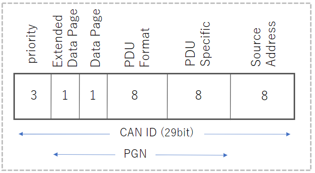

2023/08/08
J1939は、バスやトラックなどの重車両や商用車両で広く使用される通信プロトコルです。
SAE（Society of Automotive Engineers）が定めており、CAN 2.0bをベースにしています。
本ページでは、自分が調べたJ1939の仕様についてまとめています。
CANについては、以下にまとめております。
初心者向け 車載ネットワークCAN(ControlAreaNetwork)の基本
CANの基本についてまとめました
Parameter Groupは、通信メッセージを機能でグルーピングしているものです。（エンジンデータ、ブレーキデータなど）
18ビットのPGN（Parameter Group Number）によって識別され、通信時のCAN ID内で指定されています。
内容は仕様書のJ1939-71で定義されています。
PGNは、「Extended Data Page」、「Data Page」、「PDU Format」、「PDU Specific」の4つを合わせた18bitの値として表記されます。
以下に、PGNの例を挙げてみます。
■ XBR（External Brake Request）
■ EBC1（Electronic Brake Controller 1）
各デバイスは通信を開始する際に、自身のSource Addressを使用することをネットワーク上で宣言する必要があります。
この宣言をAddress Claimと言います。
以下のようなデータをネットワークに送信します。
※"0x"は16進数の意味です。
Source Addressが重複した場合は、Device Nameによって優先順位がきまります。
SelfDriving Index
2023/8/8
J1939の仕様
2023/8/8
J1939の仕様
2023/7/23
CANの基本
2023/7/6
「トコトンやさしい自動運転の本」まとめ
Sponsor